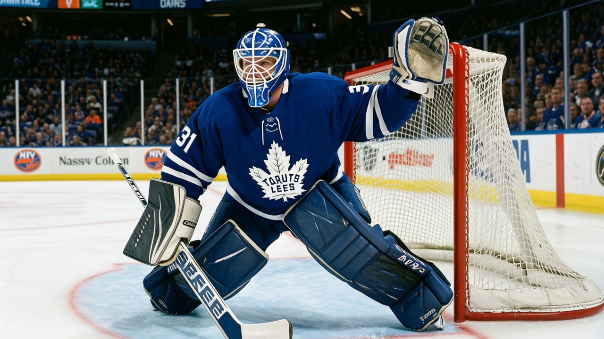
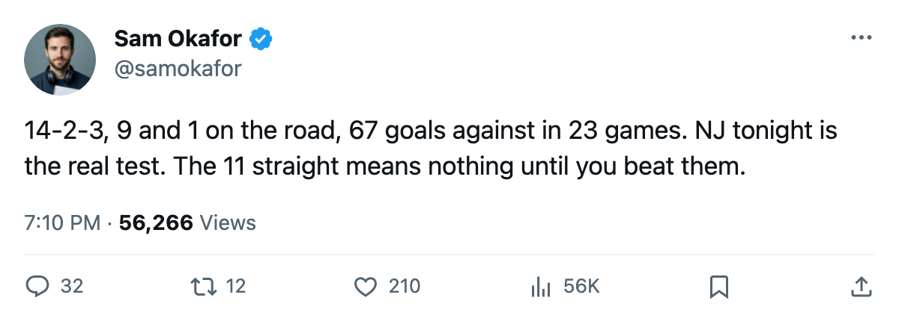

LEAFS 4, NYI 0: Aebischer blanks the Islanders for the 11th straight, and New Jersey visits tonight
The shutout over New York was the second in a row. The 14-2-3 Devils bring the road record of the century into the Air Canada Centre on Monday.

 David Aebischer84 stopped all 14 shots he faced on 2004-12-06 in a 4-0 win over
David Aebischer84 stopped all 14 shots he faced on 2004-12-06 in a 4-0 win over  New York Islanders at the Coliseum. His second consecutive blank after the 6-0 over
New York Islanders at the Coliseum. His second consecutive blank after the 6-0 over  Tampa Bay Lightning on 2004-12-03. The shutout extended
Tampa Bay Lightning on 2004-12-03. The shutout extended  Toronto Maple Leafs's winning streak to 11 games, the longest in the league.
Toronto Maple Leafs's winning streak to 11 games, the longest in the league.
Toronto is 19-5-0 with 42 points in 26 games. The margin between first and second in the East is 2 points:  New York Rangers holds 40 in 29 games. The next five on the schedule:
New York Rangers holds 40 in 29 games. The next five on the schedule:  New Jersey Devils at home tonight,
New Jersey Devils at home tonight,  Pittsburgh Penguins at home on 2004-12-10,
Pittsburgh Penguins at home on 2004-12-10,  Philadelphia Flyers on the road 2004-12-12, New York Rangers at home 2004-12-14,
Philadelphia Flyers on the road 2004-12-12, New York Rangers at home 2004-12-14,  Atlanta Thrashers on the road 2004-12-16.
Atlanta Thrashers on the road 2004-12-16.
The Devils are 9-1 on the road
Tonight's opponent is the best team in the Atlantic at 14-2-3 with 39 points in 23 games. They have allowed 67 goals in those 23 outings. Their road record reads 9-1, the best split in the conference.
 Patrik Elias84 (LW, 84 overall, out until 2004-12-12) and
Patrik Elias84 (LW, 84 overall, out until 2004-12-12) and  Jamie Langenbrunner86 (RW, 86 overall, out until 2004-12-30) are both on the injured list. Langenbrunner was scratched from the lineup after the previous edition. The Devils carry 3 players out, the same count as Philadelphia Flyers,
Jamie Langenbrunner86 (RW, 86 overall, out until 2004-12-30) are both on the injured list. Langenbrunner was scratched from the lineup after the previous edition. The Devils carry 3 players out, the same count as Philadelphia Flyers,  Buffalo Sabres, and
Buffalo Sabres, and  Detroit Red Wings.
Detroit Red Wings.
 Sergei Brylin77 moved into the H1__ slot, adding a fourth-line center to the penalty kill mix in place of Langenbrunner.
Sergei Brylin77 moved into the H1__ slot, adding a fourth-line center to the penalty kill mix in place of Langenbrunner.  Steve Guolla75 picked up the P2C__ and S2__ assignments. The center depth took a hit from the injuries but the structure held: 96 goals for, 67 against.
Steve Guolla75 picked up the P2C__ and S2__ assignments. The center depth took a hit from the injuries but the structure held: 96 goals for, 67 against.
The crease, again
David Aebischer holds the G1__ slot with 14 starts.  Ed Belfour91 is G2__ with 10 starts. Mikael Tellqvist73 has appeared in 4 games from the bench. Aebischer's 57.1 minutes a night and Belfour's 56.0 sit within a point of each other, but the slot tells the story: the 26-year-old starts, the 39-year-old backs up.
Ed Belfour91 is G2__ with 10 starts. Mikael Tellqvist73 has appeared in 4 games from the bench. Aebischer's 57.1 minutes a night and Belfour's 56.0 sit within a point of each other, but the slot tells the story: the 26-year-old starts, the 39-year-old backs up.
Aebischer's morale reads 80, Belfour's 95. Neither number changes the lineup card tonight.
The win over the Islanders came on 13 shots, fewer than the Islanders managed in 14. The margin in goal attempts was thin. The scoreline was not.
New Jersey Devils has 2 points to catch Toronto Maple Leafs in the standings. A loss tonight narrows that gap to nothing given the Devils' 3 games in hand.
